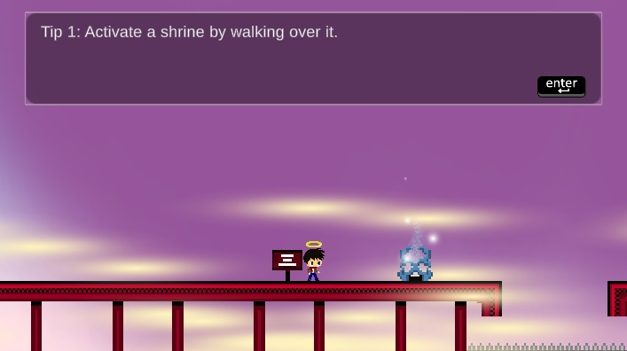

About Me
I grew up around the Denver metro area in the gorgeous state of Colorado. It was there that I went to high school, and in high school where I started my first business. What kind of business can a high schooler start? Well, it was a band!
I spent 7 years growing, failing, learning, and succeeding with that band. We released a full-length album that sold over 800 copies and successfully toured the western United States several times. The experience showed me the importance of how I presented both myself and our product. I learned how to collaborate with a team, lead, take initiative, and compete in a highly competitive industry.
I eventually decided to part ways with my band and pursue software engineering. Software development and creating music are one in the same to me. The first draft of a song is never the final result. Just like writing code, it takes fine tuning, trying different designs, and considering outside opinions to turn that first draft into a masterpiece. My passion for Software engineering stems from the creativity and expression that this process entails.
I graduated from Metropolitan State University of Denver with a B.S. in Computer Science and minor in mathematics. Soon after started my career as a software engineer for the Aerospace and Defense giant, Northrop Grumman. I've done a little bit of everything from back-end programming, to front-end web development, to infrastructure design and implementation. I’ve also gotten involved in transitioning the company to use more modern tools and practices.
Since then I've obtained a professional certificate from Stanford University in design thinking and more recently I've been reading books like 'The Lean Startup' by Eric Ries and 'Running Lean' by Ash Maurya to strengthen my entrepreneurial skills. Later on in my career I want to start my own business, building something like I did with the band; however, I’ve got some ways to go and a lot of experience to gain before setting out on such an endeavor!
About this Portfolio
This portfolio only includes my most recent side projects. Each portfolio item includes the technology used, a brief description, and links to view the project and the code. You're also welcome to view my BitBucket or Github (see links at bottom of this portfolio) for other things I've built.
If you're curious about my professional experience with my current organization, Northrop Grumman, you won't find that here. You can inquire more about my experience there by sending me an email using the email address at the bottom of this portfolio.

Untitled Platformer Game
Unreleased - in progress
Tech: C#/Unity
Since I started programming in late high school, I've loved creating games! This project is a platformer style game that's still in early development. It takes a lot of inspiration from games like Celeste, Super Meat Boy, and Hollow Knight.
My current goal is to create a compelling demo that properly showcases the vision I have for this game. The demo I have linked in this portfolio is my current progress towards that goal, which I'm pretty proud of so far! With that said, there's still a lot of work to be done and challenges to overcome.
Demo of current progress
Code
PUG Hero
Released: May 2020
Tech: Lua
PUG Hero is a World of Warcraft addon that provides players an easy way to explain boss fights to their group.
It's been well recieved so far with over 1600 total downloads. Bug fixes and new features have been implemented based on user feedback and I plan to maintain the product for the forseeable future, as long as people continue to find it useful!
Live on Curseforge
Code
Japanese Phrasebook
Released: February 2020
Tech: Java/Android/SQLite/Firebase/Admob
Inspired by a vacation I took to Japan, this is an android application that aims to help tourists better communicate with Japanese locals.
I enjoyed creating and releasing the application, but unfortunately it never picked up any traction. It's still available on the Google Play Store and I'm proud of it!
Live on Google Play
Code